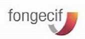

Mon CV en ligne
06 09 77 26 04
06 09 77 26 04
mady.lomendja@laposte.net
les Formations
2020 à 2022
Licence de formation adulte, validée, en cours d'obtentionLicence Rh en cours de validation, en distanciel avec le Cnam
Juin à Septembre 2021
Attestation de réussite en septembre 2021Formation de Developpeuse Web, en distanciel avec Alt-Rh

2007 à 2008
DUT gestion des entreprises et des admninistrations, obtenu en 2008Formation continue : CIF avec le fongécif
2005 à 2007
BP de Préparatrice en pharmacie, obtenu en 2007contrat de professionnalisation avec l'ACPPAV, anciennement CFA
Expériences professionnelles

Assistante de formation pour Afdas, mêmes activités que pour Constructys, sauf que le dispositif de formation
est l’apprentissage, et la gestion du dossier se fait de sa création jusqu'à la fin (rupture ou fin de
contrat), Paris (75).

gestionnaire de formation pour Constructys : réception et saisie des dossiers, en vue de leur paiement si
conformes, reception d'appels de centre de formation, de salariés. Le dispositif de formation est le plan, Paris
(75).

gestionnaire Retraite pour AG2R : instruction des dossiers de majorations de retard pour les cotisations
retraites ( accorder une remise totale ou partielle de la majoration selon certains critères, sinon refus ),
Paris (75).

gestionnaire pour la Mutuelle Générale : instruction des demandes de resiliation pour la mutuelle( accord si les
conditions sont remplies sinon refus ), Kremlin Bicêtre (94).

gestionnaire assurance maladie pour Harmonie Mutuelle : gestion des FSE, les feuilles de soins electroniques,
avec la carte vitales qui ont été réjetées, pour les soins dédiés à la pharmacie pour permettre leur paiement,
Paris (75).

Téléconseillère : informer, orienter, guider et rediriger si nécessaire les assurés du Val de Marne ;
Technicienne pour les arrêts maladie ( réceptionner, vérifier, saisir si conforme sinon, appeler, envoyer un
courrier car les informations sont insuffisantes pour l'enregistrement de l'arrêt), Créteil (94).
Gestionnaire à la CPAM du 92 : gestion des FSP, des feuilles de soins papiers. Vérifier si les feuilles de
soins sont conformes pour les mettres en paiement, si refus, envoie de courrier pour demander des informations
complémentaires, Bourg la Reine (92).

Téléconseillère à SFR : informer, orienter, guider et rediriger si nécessaire les abonnés mobiles de Sfr, à
Massy Palaiseau (91).

Préparatrice en pharmacie hospitalière : delivrance de médicament aux malades, commandes et rangement des
médicaments à la Fondation Roguet (Paris), au Centre de rééducation de Coubert ( ou Ugecam, 77), à l'hôpital
du Vésinet (78), à la Clinique d’Orgemont (95)

téléconseillère : informer, orienter, guider et rediriger si nécessaire pour Victoria Line ( Sernam et les
livreurs, Nespresso et les capsules), Téléperformance ( Center Park, Orange), Bayard Press ( Vente
magazine).